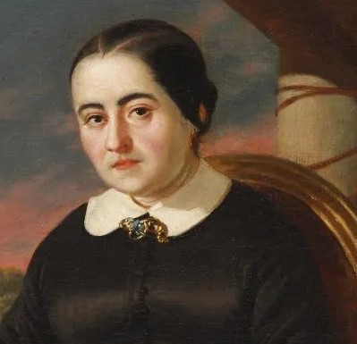

Seudónimo utilizado por Cecilia Böhl de Faber y Larrea (Morges, Suiza, 24 de diciembre de 1796 — Sevilla, 7 de abril de 1877).
Cecilia Böhl nació en Suiza y tomó su seudónimo de la población de Fernán Caballero (Ciudad Real). Vivió en Alemania hasta que regresó con su familia a Cádiz en 1813. Tras su matrimonio en 1816 se mudó a Puerto Rico y tras la muerte de su esposo, vivió en Hamburgo con su abuela. Años más tarde se mudó nuevamente a El Puerto de Santa María, donde volvió a casarse y enviudar. El suicidio de su tercer esposo le llevó a la pobreza, aunque posteriormente los duques de Montpensier y la reina Isabel II la protegieron.
Su obra tiene un carácter costumbrista y se distingue por la defensa de las virtudes tradicionales, la monarquía y el catolicismo, con tramas ligeras e ingenuas.
